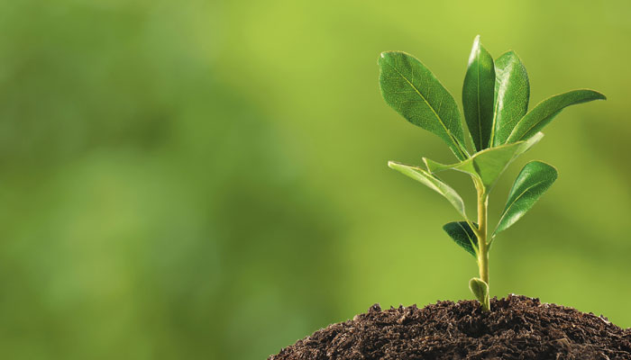
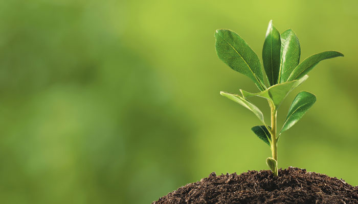
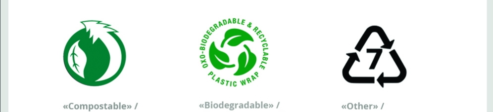

Be Eco Friendly...
Подбай про новий день!Майбутнє залежить від того, що ти робиш сьогодні.
магазин еко-товарів
Подбай про новий день!Майбутнє залежить від того, що ти робиш сьогодні.

Біорозкладані пластики - це не якийсь певний вид пластику, а велике сімейство різних полімерів. Ці полімери виробляються з рослинної сировини і розкладаються до діоксиду вуглецю і води. Сировиною для цього пластика виступають кукурудза, пшениця, цукровий очерет і інші рослини. Біорозкладний пластик часто можна розпізнати по спеціальному маркуванню.
Під час покупки товарів з «розкладних» пластиків важливо розуміти, якою буде їхня подальша доля в наших умовах. Так, біорозкладаний пластик розкладається тільки в певних умовах, яких, як правило, немає на наших звалищах. Для правильної утилізації біорозкладних пакетів їх потрібно компостувати. Ще одним важливим недоліком біорозкладних пакетів є те, що для їх виробництва потрібно багато енергії і води, використання цінних органічних культур, що веде до подорожчання виробництва. При цьому на звалищах вони все одно не розкладаються. Єдиною, дійсно, екологічною альтернативою може стати тільки багаторазова ганчіркова сумка: вона і прослужить вам довго, і після потрапляння на звалище НЕ завдасть навколишньому середовищу такої шкоди, як пластиковий пакет.